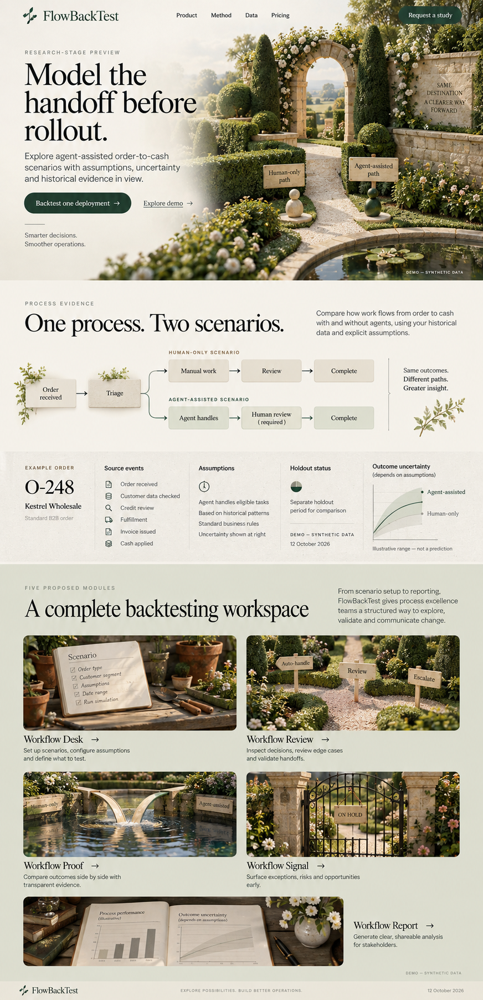
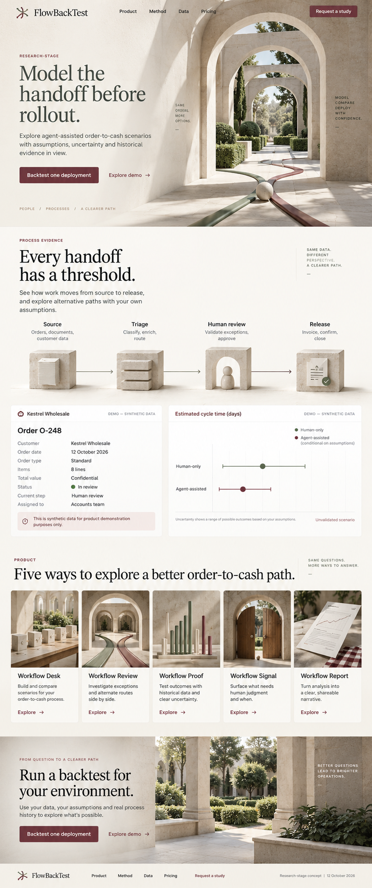
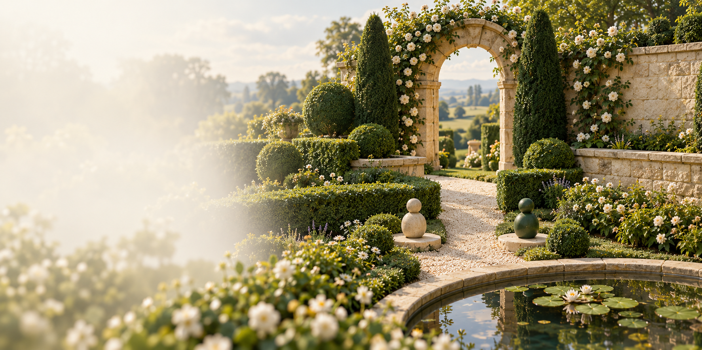
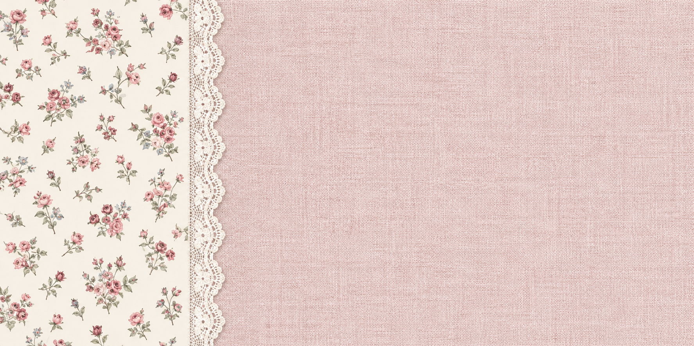
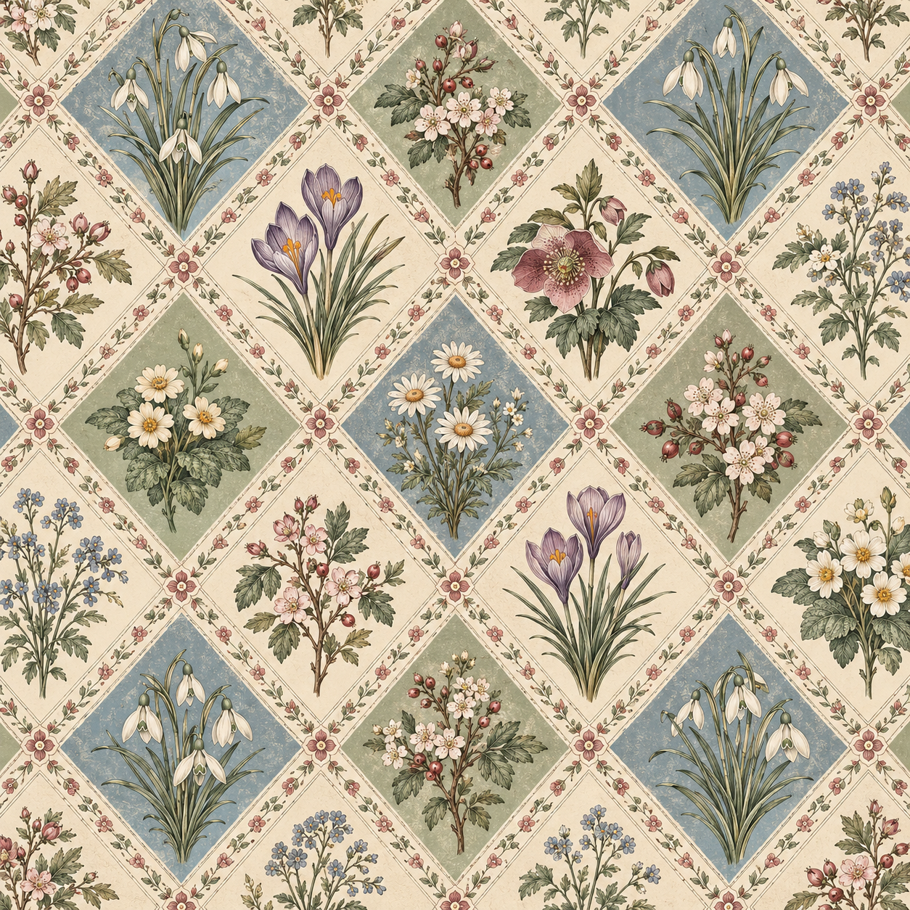

For supplemental explanation only; a persistent text equivalent sits below.
WALLED GARDEN × CLOISTER / 12 OCTOBER 2026A considered path
A considered path
from question
to evidence.
A complete identity and component system for FlowBackTest. Explore the palettes, type, spacing, live interactions and selected Returning Wordmark identity.
One identity. Two environments.
Warm, considered, precise. The Walled Garden welcomes the buyer; the Cloister carries them deeper into the method and product.

Sunlit limestone, living greens, wide scenes and progressive process storytelling.

Pale stone frames, burgundy actions, quiet proportions and clean analytical content.
These images are selected concept previews. This kit specifies the reusable identity and components; product copy in generated artwork is reconciled to the researched IA during the website build.
| Shared | Homepage expression | Supporting-page expression |
|---|---|---|
| Typography / icons / data language | Editorial serif and forest actions; scenes can expand across the grid. | Same type and icon set; burgundy actions and architectural frames. |
| Palette / spacing / controls | Chalk → paper → sage → forest chapters. | Chalk → paper → limestone → quiet burgundy chapter. |
| Process visual vocabulary | Paths and garden rooms explain branching and constraints. | Arches and thresholds frame handoffs; charts use the same units/line styles. |
| Brand voice | “Model the handoff before rollout.” Plain, decision-specific copy. | “Inspect the assumptions.” Evidence-focused explanations, with the same research-stage boundary. |
Country materials, functional roles.
Click a swatch to copy its hex. Forest is the primary action on garden pages; burgundy serves the same role on cloister pages. Pale brass and sage are atmospheric accents. Text, control outlines and status cues use the tested dark variants below.
| Role | Value | Use |
|---|---|---|
| chalk | #F4F0E6 | Background/illustration |
| paper | #FFFEFA | Background/illustration |
| limestone | #D0C7B6 | Background/illustration |
| sage | #AAB69B | Background/illustration |
| yew | #243D2E | Text/brand action |
| ink | #222B25 | Text/brand action |
| burgundy | #743F48 | Text/brand action |
| brass | #B89B69 | Background/illustration |
Calculated contrast pairs
| Pair | Ratio | Target / result |
|---|---|---|
| Body #222B25 on #F4F0E6 | 12.81:1 | 4.5:1 · Pass |
| Muted #5D655C on #FFFEFA | 5.98:1 | 4.5:1 · Pass |
| Garden CTA #FFFEFA on #243D2E | 11.68:1 | 4.5:1 · Pass |
| Cloister CTA #FFFEFA on #743F48 | 8.17:1 | 4.5:1 · Pass |
| Control border #7B8375 on #FFFEFA | 3.89:1 | 3:1 · Pass |
| Error #983D3A on #F6E5DF | 5.61:1 | 4.5:1 · Pass |
| Warning #795526 on #F5ECD9 | 5.69:1 | 4.5:1 · Pass |
| Info #3E5D66 on #E6EEEF | 6.02:1 | 4.5:1 · Pass |
| Success #315D3D on #E6EDE1 | 6.36:1 | 4.5:1 · Pass |
| Focus on chalk #743F48 on #F4F0E6 | 7.24:1 | 3:1 · Pass |
Calculated sRGB ratios for these specified solid-color pairs. Images, overlays, final states and the whole website require separate QA. Disabled controls are deliberately visually muted.
An English editorial voice. A clear product voice.
EB GARAMOND / DISPLAY 500
Every handoff
has a threshold.
has a threshold.
A considered path from question to evidence.
SOURCE SANS 3 / BODY 400 · UI 600
Inspect the source. Define the change. Compare the scenario.
Body text remains readable on plain surfaces. Use tabular numerals for timestamps, counts and metrics: O-248 · 12 Oct 2026 · 14:32 · 40 cases.
| Style | Desktop / mobile | Weight · line height · tracking |
|---|---|---|
| Hero H1 | 80–96 / 44–56px; fluid clamp | EB Garamond 500 · 1.02 · −0.025em; max 12–14 words |
| Section H2 | 56–64 / 36–42px | EB Garamond 500 · 1.08 · −0.015em |
| Page H1 / H3 | 64 / 44px; H3 30 / 28px | EB Garamond 500 · 1.15 |
| Lead / body | 22 / 20px; body 18 / 17px | Source Sans 3 400 · 1.5 / 1.6 |
| UI / caption / eyebrow | 16 / 16px; caption 14px; eyebrow 12px | UI 600 · 1.25; caption 400 · 1.45; eyebrow 600 · .12em |
| Data / tables | 14–16px | Source Sans 3 · tabular nums · 1.5; align decimal/number columns right |
Use serif italic for short editorial accents, not error messages or data labels. Keep body copy near 60–68 characters per line. Bundle the supplied font licenses; no third font is needed.
Deliberate spacing and alignment.
4
8
12
16
24
32
48
64
96
128
| System | Rule |
|---|---|
| Grid | 12 columns desktop, 8 tablet, 4 mobile; content max 1248px, wide scene max 1440px, reading width 680px. |
| Gutters / breaks | 64px at 1440; 32px tablet; 24px mobile. Switch at 1200 / 900 / 600px based on content. |
| Section rhythm | Desktop 96–128px; mobile 56–72px; heading → lead 16–24px; copy → visual 32–48px. |
| Card geometry | Gallery 16px radius; information card 12px; input/button 8px; CTA pill reserved for garden hero or compact tag. Padding 24–32px desktop, 20–24px mobile. |
| Alignment | Headlines, copy, buttons and captions share a left baseline. Card headings and CTAs align through grid rows; no fixed heights that clip copy. |
| Brand placement | Header 80px desktop / 68px mobile; primary lockup at least 160px wide. No logo on a busy scene without a quiet surface. |
| Hierarchy | One dominant action per visible section. Each significant chart has a source/assumption caption and accessible table or summary. |
A different setting for each chapter.
01 / Arrival
Chalk + garden scene
Forest CTA on a stable light foreground.
02 / Evidence
Paper + fine rules
Data, provenance and controls stay clean.
03 / Modules
Sage wash
Five different scenes; names stay outside motion.
04 / Method
Pale stone
Burgundy action and quiet diagram framing.
05 / Study
Yew green
One closing invitation; light button.
06 / Report accent
Checked linen
Use in small material panels, with opaque copy surfaces.
Checks are a decorative implementation pattern, not data grid lines. Limestone/brass accents never carry required text or control boundaries alone. Photographic textures and 3D scenes are commissioned assets at the website stage.
Five effects. Five deliberate uses.
Use on visual gallery imagery, with title and CTA outside the shutters.
A small material object may rotate; do not tilt reading surfaces or charts.
Keep default contrast sufficient; the animated border is enhancement.
Useful for selectable content. Never encode selected state by color alone.
| Interaction | Timing | Limits |
|---|---|---|
| Icon colour / surface / arrow | 160–260ms · standard ease | Touch gets selected/open state; keyboard focus reproduces the effect. |
| Flip / shutters | 500–650ms · standard ease | No hidden critical content; reverse on exit; click toggles on touch. |
| Scene / scroll transition | 600–900ms or scroll progress | One short pinned story at a time; reverse deterministically; preserve native scroll. |
| Reduced motion | Instant final state | Remove rotation/flip/travel; reveal supplemental detail in a flat, readable state. |
One clear stroke. Carefully handled social marks.
24px source grid, 2px stroke, round caps/joins; 16px navigation, 20px controls, 24px features. Icons inherit current text color. Hover/focus changes container paper → sage and icon ink → forest. In Cloister mode use burgundy for action icons. Status icons use text labels alongside their semantic color.
Official downloaded artwork is unchanged. Social tiles are preview controls; FlowBackTest profile URLs have not been supplied. Link to verified profiles during website implementation. No endorsement or partnership is implied.
Depth, form states and analytical clarity.
LOW / 2px 8px
Buttons and small controls
Buttons and small controls
CARD / 8px 24px
Hover gallery emphasis
Hover gallery emphasis
PANEL / 20px 56px
Menu and evidence drawer
Menu and evidence drawer
Component preview only. No data is sent.
This illustrates an error; keep a visible message.
Source ready Assumption required Control criterion not met Holdout not evaluated
Status copy reflects evidence. “Unknown” is not zero. No certification or accuracy claim accompanies these component examples.
| Element | Style rule |
|---|---|
| Inputs | 48px height, paper background, 1px strong border, 12–16px inset, persistent label; focus ring matches page theme. |
| Menus / accordion | Plain source labels; icon turns 180° only on open; keyboard Escape closes, focus returns; all destinations available on mobile. |
| Charts | Observed: solid ink; human-only: solid forest; agent-assisted: dashed burgundy; uncertainty: sage fill with boundary. Always show labels and interval definition. |
| Diagram | Connectors 1.5–2px, connect at explicit ports, no lines through labels; arrows only where direction matters. Original 3D objects illustrate, analytical SVG/HTML expresses data. |
| Tags / dividers | 12–14px labels, 8px inset; DEMO disclosure persistent; hairline borders for grouping, strong borders for required controls. |
| Shadows | Soft yew-tinted alpha, documented on light canvas/paper; no glow; dark forest uses border separation instead of dark shadows. |
Earlier logo exploration.
Recommended: Branch & Return. Select one mark before it becomes the website logo or favicon.
FlowBackTest
FlowBackTest
16px24px32px64px
Branch & Return
Two alternative routes reunite at one comparison. Closest to the product mechanism.


FlowBackTest
FlowBackTest
 64px
64pxPaired Thresholds
Offset open gates share a passage. Strongest connection to the selected architecture.


FlowBackTest
FlowBackTest
16px24px32px64px
Replay Register
Chronological steps return to an earlier comparison edge. Most technical and compact.


All three are original vector candidates, with positive, reverse, black and small-size files. Wordmark lockups use outlined EB Garamond, preserving the selected editorial character. The mark works independently from the interface icon set. These are design candidates, not trademark clearance or a claim of historical authority.
| Production rule | FlowBackTest specification |
|---|---|
| Clear space | At least ¼ mark height around all sides; increase near busy imagery. A proposed own-brand rule, not borrowed from another brand. |
| Size | Primary lockup ≥160px wide, mark ≥24px; dedicated small mark at 16px. Keep the company name nearby when using mark alone. |
| Color | Yew on chalk/paper; paper on yew; black for one-ink print. Burgundy variation only after final logo selection. Never fill the mark with texture. |
| Do not | Stretch, add drop shadows/glow, rotate the main logo, animate it into an approval check, encircle it as a certification badge, or invent a founding date. |
| Favicon | Use the selected small-size mark; final ICO, app sizes and social preview follow selection. Candidate favicons are not treated as approved branding. |
Built to inspect, then refine.
Perplexity’s high research preset informed the logo principles; authoritative sources were checked directly. IBM’s guidelines show the importance of clear space and positive/reversed artwork, while GOV.UK demonstrates that tiny marks can need dedicated versions. Those brands’ exact dimensions are not universal rules.
- IBM logo guidelines
- GOV.UK logo elements
- Lucide icon specification
- EB Garamond source/license · Source Sans 3 source/license
- LinkedIn [in] usage · Crunchbase official press assets
Package contains: this live brand kit, CSS/JSON tokens, 24 Lucide UI icons and license, official social artwork, locally bundled fonts/licenses, three original SVG logo families, outlined wordmarks, selected visual references and asset-source notes. Option 4 — The Returning Wordmark is selected. Real social destinations remain to be connected.
Every scene, ready to use.
19 standalone images for the Walled Garden and Cloister: heroes, ten module illustrations, four workflow objects, a courtyard banner and two transparent botanical accents.


AI-generated brand illustrations, not product screenshots. Native dimensions, crop guidance and prompts are documented in the image library.
The Returning Wordmark.
Option 4 from Round 2 is selected. The full name carries the identity, with a return-shaped B and a related compact FB mark.
Earlier logo candidates are retained as exploration history; this is the selected direction.
The country-house paper collection.
Ten original backgrounds and decorative illustrations inspired by botanical postage, rose prints, lace, herbarium diamonds and woven tartan.

